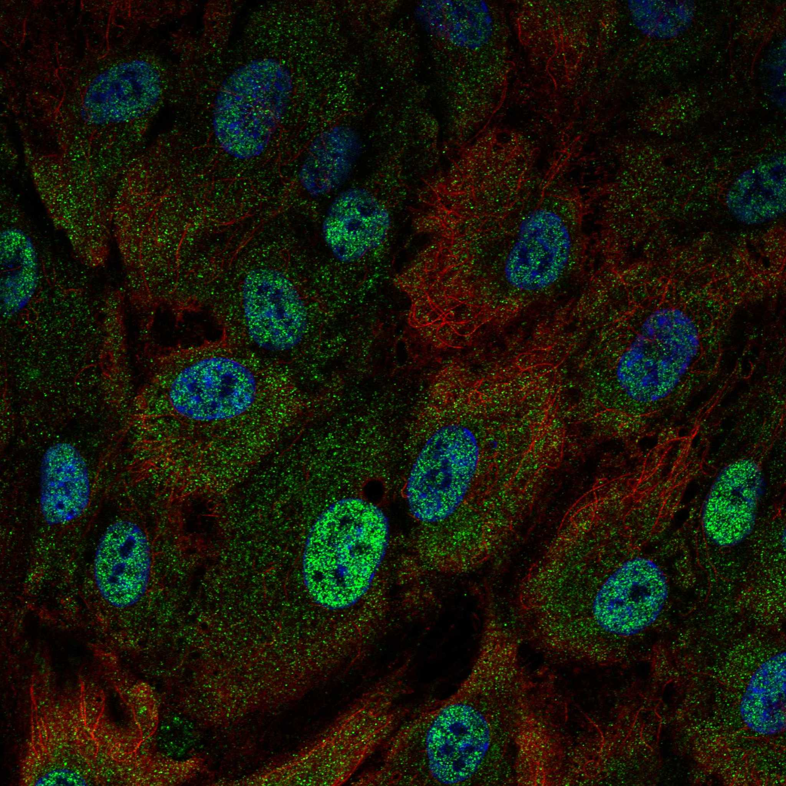
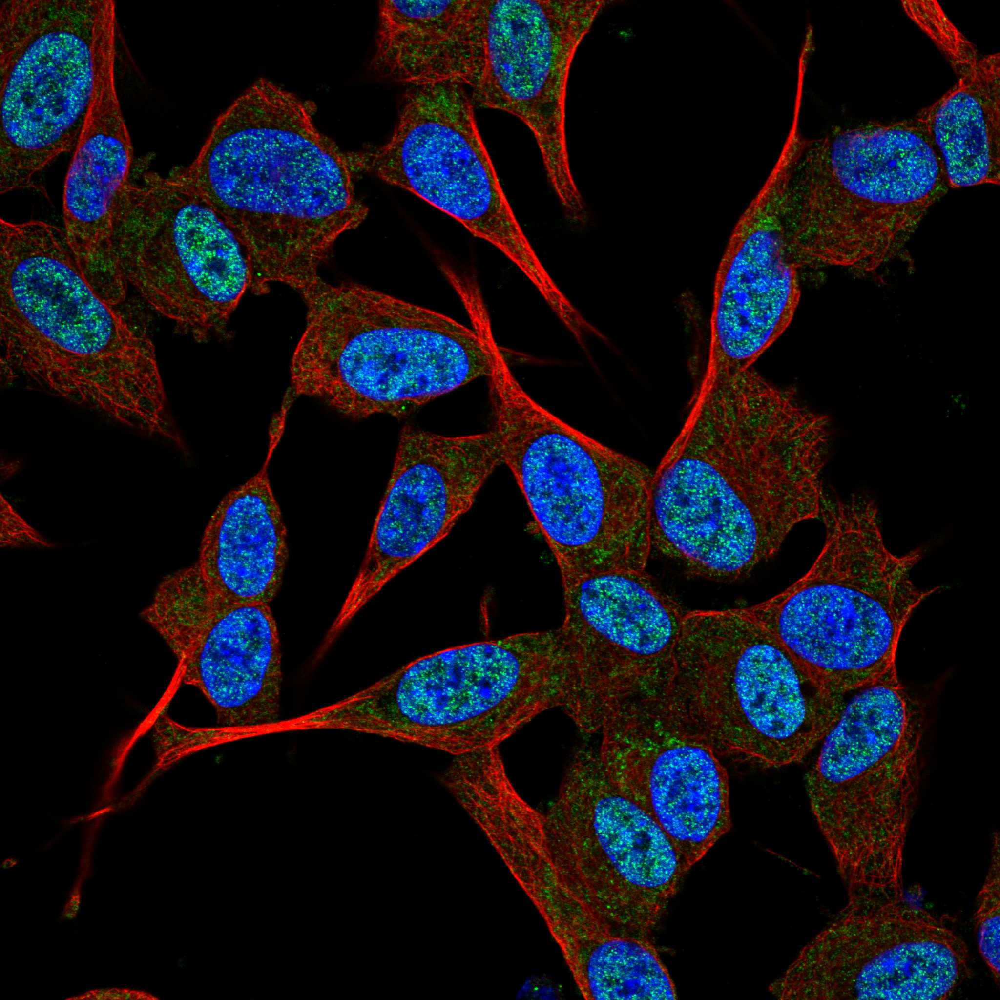
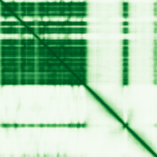

type: protein-evaluation gene: "FAM124B" date: 2026-06-03 tags: [protein-scout, nuclear-protein, evaluation] status: scored ---
FAM124B 核蛋白评估报告 (Full Re-evaluation)
1. 基本信息
| 项目 | 内容 |
|---|---|
| 基因名 / 别名 | FAM124B |
| 蛋白名称 | Protein FAM124B |
| 蛋白大小 | 455 aa / 51.0 kDa |
| UniProt ID | Q9H5Z6 |
| 评估日期 | 2026-06-03 |
IF 图像:  
2. 评分总览
| 维度 | 得分 | 满分 | 加权后 | 关键证据摘要 |
|---|---|---|---|---|
| 核定位特异性 | 7/10 | ×4 | 28 | HPA: Nucleoplasm; 额外: Mitochondria; UniProt: Nucleus |
| 蛋白大小 | 10/10 | ×1 | 10 | 455 aa / 51.0 kDa |
| 研究新颖性 | 10/10 | ×5 | 50 | PubMed strict=6 篇 (≤20→10) |
| 三维结构 | 6/10 | ×3 | 18 | AlphaFold v6 pLDDT=63.1; PDB: 无 |
| 调控结构域 | 7/10 | ×2 | 14 | InterPro: IPR029380, IPR046365; Pfam: PF15067 |
| PPI 网络 | 3/10 | ×3 | 9 | STRING 15 partners; IntAct 15 interactions |
| 互证加分 | — | max +3 | 1.0 | PDB+AF+STRING+IntAct cross-validation |
| 原始总分 | 130.0/180 | |||
| 归一化总分 | 72.2/100 |
3. 详细分析
3.1 核定位证据
| 来源 | 定位 | 可信度 |
|---|---|---|
| Protein Atlas (IF) | Nucleoplasm; 额外: Mitochondria | Approved |
| UniProt | Nucleus | Swiss-Prot/TrEMBL |
IF 图像获取: IF图像已下载并嵌入 (2张)
GO Cellular Component:
- mitochondrion (GO:0005739)
- nucleoplasm (GO:0005654)
结论: 主要核定位，HPA 可靠性良好，有辅助数据源支持。
3.2 蛋白大小评估
评价: 大小适中（200-800 aa），适合常规生化实验和结构解析。
3.3 研究现状
| 指标 | 数值 |
|---|---|
| PubMed strict count | 6 |
| PubMed broad count | 7 |
| 别名(未计入scoring) | 无 |
关键文献: 1. Identification and characterization of FAM124B as a novel component of a CHD7 and CHD8 containing complex.. *PloS one*. PMID: 23285124 2. Analysis of Genetic Alterations Related to DNA Methylation in Testicular Germ Cell Tumors Based on Data Mining.. *Cytogenetic and genome research*. PMID: 34433169 3. High-throughput single-cell DNA methylation and chromatin accessibility co-profiling with SpliCOOL-seq.. *Clinical and translational medicine*. PMID: 41603298 4. Genome-wide association study of subfoveal choroidal thickness in a longitudinal cohort of older adults.. *Scientific reports*. PMID: 39384883 5. A genome-wide association study of anorexia nervosa.. *Molecular psychiatry*. PMID: 24514567
评价: 极度新颖，几乎未被系统研究（PubMed ≤20篇）。
3.4 三维结构分析
| 指标 | 数值 |
|---|---|
| AlphaFold 版本 | v6 |
| AlphaFold 平均 pLDDT | 63.1 |
| 高置信度残基 (pLDDT>90) 占比 | 28.6% |
| 置信残基 (pLDDT 70-90) 占比 | 19.6% |
| 中等置信 (pLDDT 50-70) 占比 | 5.1% |
| 低置信 (pLDDT<50) 占比 | 46.8% |
| 有序区域 (pLDDT>70) 占比 | 48.2% |
| 可用 PDB 条目 | 无 |
PAE (Predicted Aligned Error): 
评价: AlphaFold 预测质量有限（pLDDT=63.1），有序残基占 48.2%。
3.5 结构域分析
| 来源 | 结构域 |
|---|---|
| InterPro/Pfam | InterPro: IPR029380, IPR046365; Pfam: PF15067 |
染色质调控潜力分析: 存在已知结构域注释，可作为功能研究的结构基础。
3.6 PPI 网络
STRING 预测互作 (combined score >0.4):
| Partner | Combined Score | Experimental | 功能类别 |
|---|---|---|---|
| CHD8 | 0.760 | 0.000 | — |
| CHD7 | 0.570 | 0.000 | — |
| FAM174B | 0.521 | 0.000 | — |
| MDFI | 0.504 | 0.504 | — |
| OR2A2 | 0.478 | 0.000 | — |
| MANEAL | 0.448 | 0.000 | — |
| SPATA13 | 0.444 | 0.000 | — |
| FAM167B | 0.437 | 0.000 | — |
| FAM124A | 0.433 | 0.000 | — |
| ZNF254 | 0.420 | 0.045 | — |
实验验证互作 (IntAct):
| Partner | 方法 | PMID | ||
|---|---|---|---|---|
| EFEMP2 | psi-mi:"MI:0398"(two hybrid pooling approach) | pubmed:16189514 | imex:IM-16520 | |
| CCDC85B | psi-mi:"MI:0398"(two hybrid pooling approach) | pubmed:16189514 | imex:IM-16520 | |
| TRIM37 | psi-mi:"MI:0398"(two hybrid pooling approach) | pubmed:16189514 | imex:IM-16520 | |
| MDFI | psi-mi:"MI:0398"(two hybrid pooling approach) | pubmed:16189514 | imex:IM-16520 | |
| TRIP6 | psi-mi:"MI:0398"(two hybrid pooling approach) | pubmed:16189514 | imex:IM-16520 | |
| PAK5 | psi-mi:"MI:0397"(two hybrid array) | imex:IM-27438 | doi:10.1038/s414 | |
| IKZF3 | psi-mi:"MI:0397"(two hybrid array) | pubmed:32296183 | imex:IM-25472 | |
| MTUS2 | psi-mi:"MI:0397"(two hybrid array) | pubmed:32296183 | imex:IM-25472 | |
| CYSRT1 | psi-mi:"MI:0397"(two hybrid array) | pubmed:32296183 | imex:IM-25472 | |
| MYF5 | psi-mi:"MI:0397"(two hybrid array) | pubmed:32296183 | imex:IM-25472 |
PPI 互证分析:
- STRING + IntAct 均有数据
- STRING partners: 15，IntAct interactions: 15
- 调控相关比例: 1 / 15 = 7%
评价: STRING 15 个预测互作，IntAct 15 个实验互作。调控相关配体占比 7%。
3.7 多库互证
| 维度 | 来源 | 结果 | 是否一致 |
|---|---|---|---|
| 三维结构 | AlphaFold pLDDT=63.1 + PDB: 无 | pLDDT=63.1, v6 | 仅预测 |
| 定位 | UniProt + HPA | Nucleus / Nucleoplasm; 额外: Mitochondria | 一致 |
| PPI | STRING + IntAct | 15 + 15 interactions | 数据充分 |
互证加分明细:
- PDB + AlphaFold 双源验证: +0
- 多库定位一致 (3源): +0.5
- STRING + IntAct 双源验证: +0.5
- 结构域 + AlphaFold 质量: +0
- PDB 多条目覆盖: +0
总分: +1.0 / max +3
4. 总体评价
推荐等级: ⭐⭐⭐⭐
核心优势: 1. FAM124B — Protein FAM124B，极度新颖，几乎未被系统研究（PubMed ≤20篇）。 2. 蛋白大小455 aa，大小适中（200-800 aa），适合常规生化实验和结构解析。
风险/不确定性: 1. PubMed 6 篇，研究基础极有限，功能注释不完整 2. AlphaFold 预测质量一般（pLDDT=63.1），需要更多实验结构验证
下一步建议:
- [ ] 查阅最新关键文献补充研究背景
- [ ] 获取 Protein Atlas IF 图像确认亚细胞定位
- [ ] 设计体外实验验证核定位及潜在调控功能
5. 数据来源
- UniProt: https://www.uniprot.org/uniprotkb/Q9H5Z6
- Protein Atlas: https://www.proteinatlas.org/ENSG00000124019-FAM124B/subcellular
- PubMed: https://pubmed.ncbi.nlm.nih.gov/?term=FAM124B
- AlphaFold: https://alphafold.ebi.ac.uk/entry/Q9H5Z6
- STRING: https://string-db.org/network/9606.ENSP00000
- Data fetched live: 2026-06-03